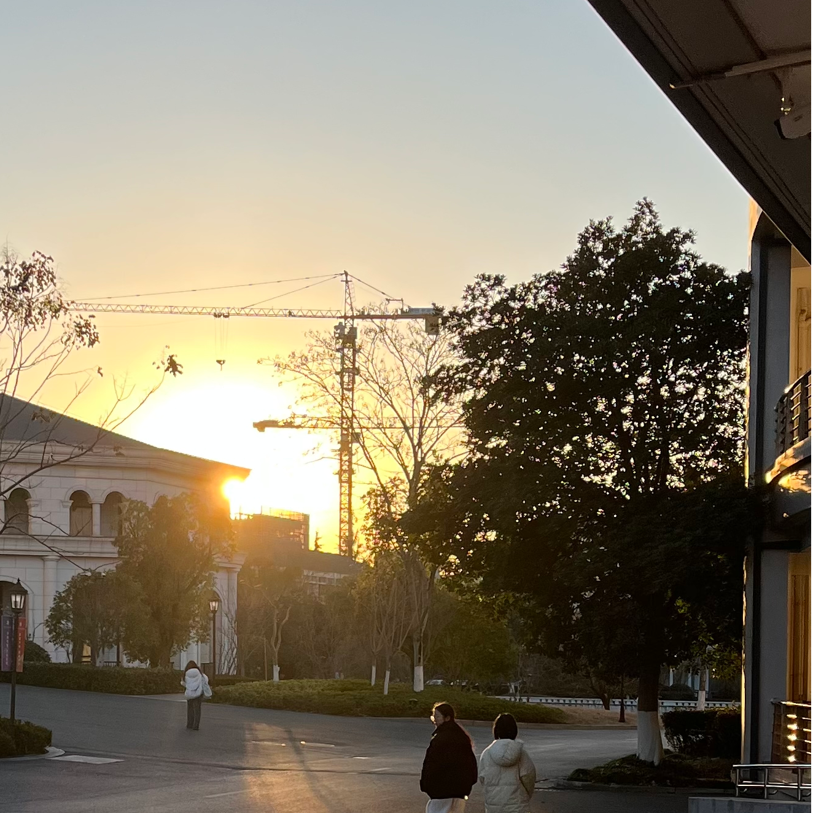

{% block head %} {% endblock %}
个人博客

Gress
more
主页
(current)
分享
{#
关于我
#}
关于我
暂时没用
{% if user %}
退出登录
{% else %}
登录
{% endif %}
{% block mainwrapper %} {% endblock %} {% block pjs %} {% endblock %}